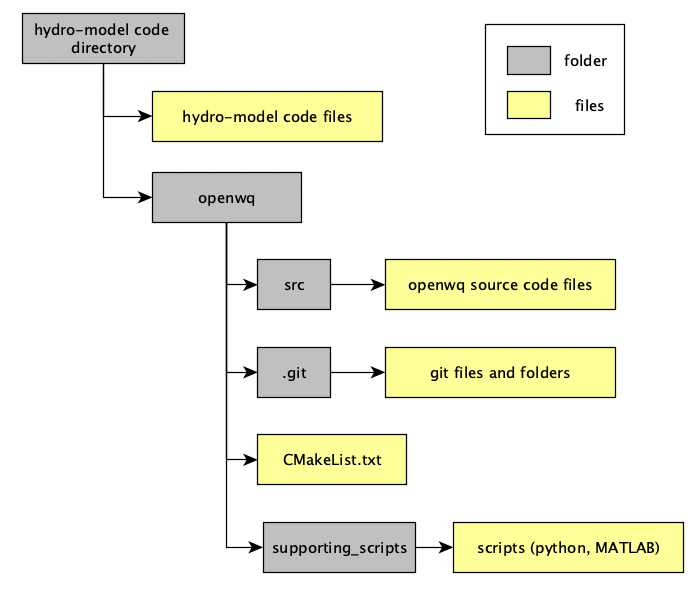

Get OpenWQ¶
It is important that you follow the following steps in order to clone OpenWQ in your machine, but to also make sure that you can easily pull and integrate updates in an efficient and hassle-free manner.
STEP 1: Locate host-model source code folder¶
First locate the directory that contains your hydro-model source code.
Open a Terminal and go to that folder:
cd <hydro model code directory>
STEP 2: Clone OpenWQ¶
To clone OpenWQ in your machine you should first install Git.
Now, lets clone the OpenWQ project in that folder. Go back to the Terminal, and run the following git command:
git clone https://github.com/DiogoCostaPT/openwq.git
This will create a new folder named openwq that will contain the OpenWQ project, which consists of:
folder
src: contains the OpenWQ’s source code,Gitfolders and filescmakefolders and filesfolder
json_files_repo: contains samples of input JSON filesfolder
supporting_scripts: contains several scripts in Python and MATLAB to support input generation and output extractionfolder
wikipage: contains the source code of the wiki pages (rst and html files)
You should see the following directory tree:
{kind=link}
ATENTION: Never change the code inside the openwq folder, except if for updating openwq. For that, please follow STEP 3).
STEP 3: Keep OpenWQ updated¶
We are continuously working on improvements to OpenWQ. Thus, it is important that you regularly pull changes from OpenWQ’s remote repository in GitHub.
If you follow the instruction prescribed in STEP 2, updating openwq will not break OpenWQ’s API calls.
To update OpenWQ, regularly:
Open a Terminal,
Go inside the
OpenWQ_codefolder, andRun the following command:
git pull